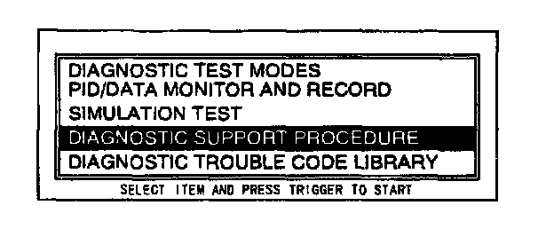
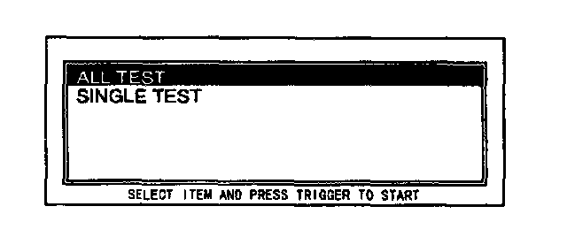
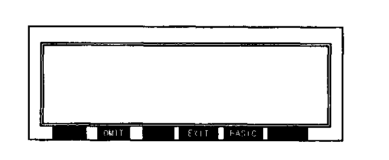

Diagnostic Support Procedure
NOTE:- This is a specific function.
1. Perform the NGS Tester Hook-up Procedure.
2. Perform steps 1 through 8 from the "DTCs Reading Procedure".

3. Move the cursor to DIAGNOSTIC SUPPORT PROCEDURE. Press the trigger key to enter this selection.

4. Move the cursor to ALL TEST or SINGLE TEST. Press the trigger key.
NOTE:
- ALL TEST inspects each item according to an established programmed order. With SINGLE TEST, enable to select and inspect any test item in any order, one at a time.

5. Follow the instructions displayed on the NGS tester and press the trigger key.
NOTE:
- To skip a test item, press OMIT.
- Before performing the test, the basic condition on the test vehicle must be set-up in order to get exact data. Press BASIC to view the basic condition instruction screen.
- If the screen shows PASSED, the system operates correctly.
- If the screen shows FAULTY, the system operates incorrectly.